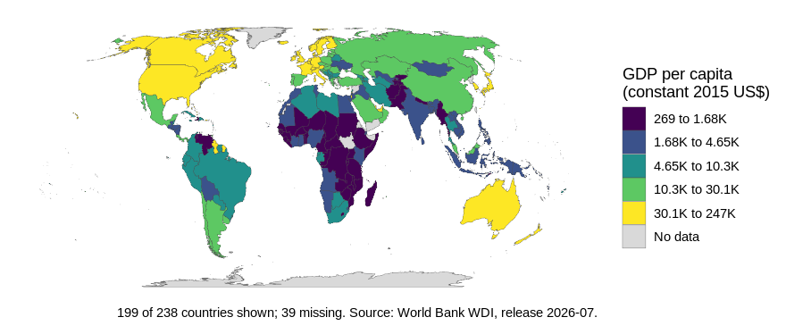

Country data onto honest maps: joined on ISO codes, never on country names.
🔑 Messy names in, one key out, in any of a dozen languages:
library(countryatlas)
d <- data.frame(country = c("Cote d'Ivoire", "Korea, Rep.", "Deutschland", "U.K."))
standardize_country(d, country, add = "iso3c")
#> # A tibble: 4 × 2
#> country iso3c
#> <chr> <chr>
#> 1 Cote d'Ivoire CIV
#> 2 Korea, Rep. KOR
#> 3 Deutschland DEU
#> 4 U.K. GBR🗺️ An equal-area map that states its coverage and its source:
world_map(attach_geometry(world_snapshot$countries), gdp_per_capita)
🕰️ Membership and classification as they were, not as they are:
in_group(c("GBR", "GBR"), "EU", origin = "iso3c", as_of = c(2016, 2021))
#> [1] TRUE FALSE
classify_countries(data.frame(iso3c = "VNM", year = c(2026, 2027)), "income")
#> iso3c year income
#> 1 VNM 2026 Lower middle income
#> 2 VNM 2027 Upper middle income🚀 Setup
install.packages("countryatlas")-
library(countryatlas): the bundledworld_snapshotand the maps work offline. - Optional, for the
sfbackend and every projection:install.packages(c("sf", "rnaturalearth", "rnaturalearthdata")) - Live data:
world_data(2020)from the World Bank, or any provider incountry_sources()throughfetch_indicator().
⚠️ Gotchas
| What bites | What to do |
|---|---|
| Fetching needs the network |
world_snapshot is offline; the fetchers call the providers. |
| World Bank releases revise old values | Pin one: world_data(2020, vintage = "2024-07"). |
The cache lives in tools::R_user_dir("countryatlas", "cache")
|
clear_country_cache() empties it. |
| TLS errors behind a proxy | Point CURL_CA_BUNDLE at your CA bundle; never turn verification off. |
sf will not load |
Maps still draw: the polygon backend and its Equal Earth are built in. |
📚 Learn more
The Gallery shows every map verb; the articles cover panels, tracing data to its source and honest maps.